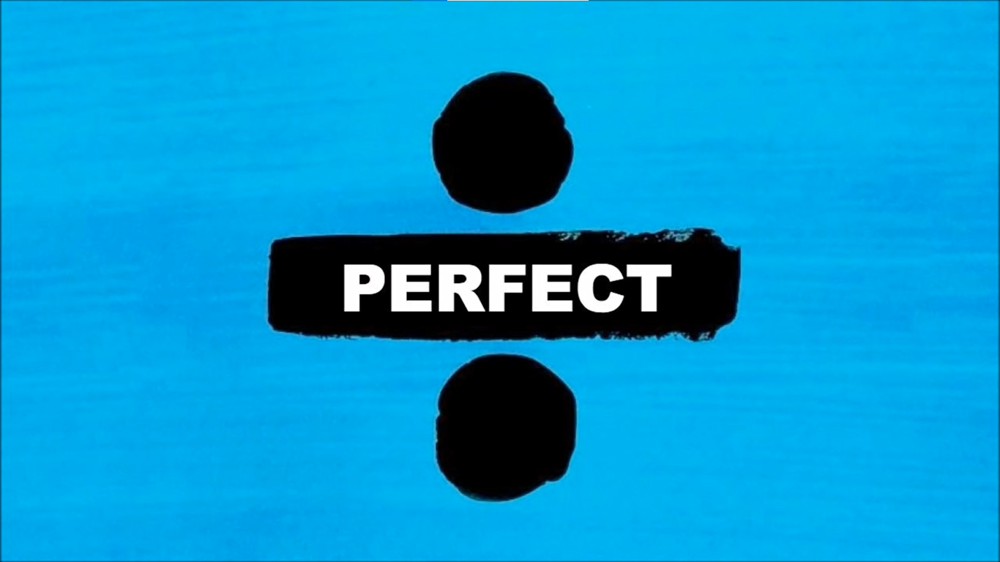
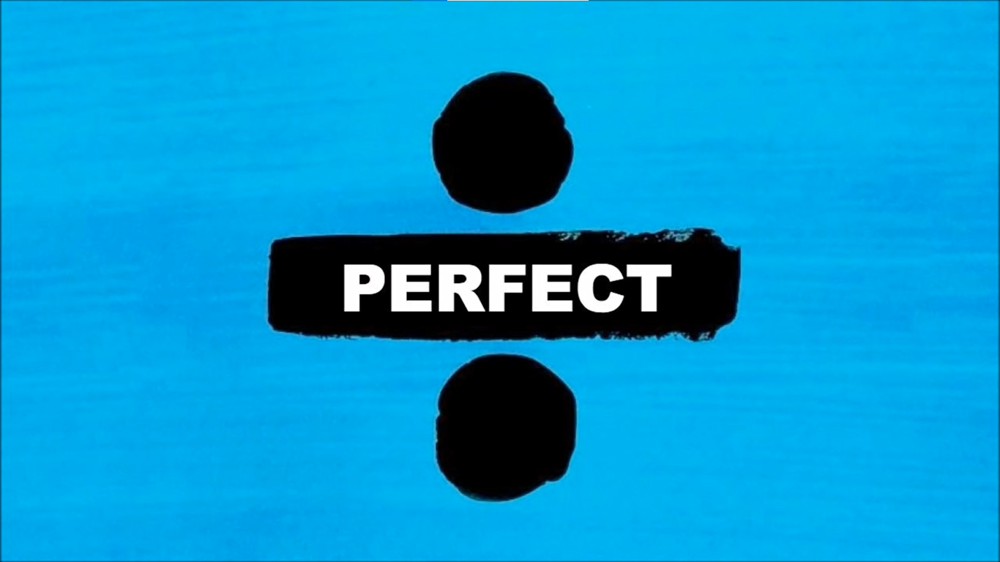

Welcome to the Guitar Tabs Website
Fan made website for beginner tab guitarists.
We have three main genres of music to choose - Rock, Jazz and Pop. There's also a fully functioning metronome for you to practice your rythm. If you have any questions, suggestions or song requests to add to the library, please click on the contacts page.

 
